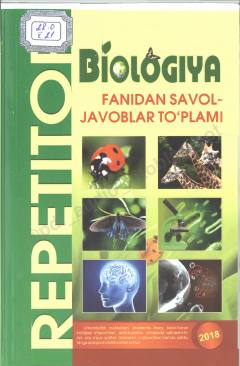

BFBiologiya fanidan test va savol-javoblar to'plami abituriyentlar hamda o'quvchilar uchun.
Ushbu to'plam umumta'lim maktablari o'quvchilari, akademik litsey va kasb-hunar kollejlari talabalari hamda abituriyentlar uchun biologiya fanidan tuzilgan savol-javoblar va testlarni o'z ichiga oladi. Kitobda asosan botanika, zoologiya va umumiy biologiya bo'yicha bilimlar qamrab olingan bo'lib, bilimni sinash va mustahkamlash uchun xizmat qiladi. Materiallar so'nggi yillardagi darsliklar asosida tayyorlangan.